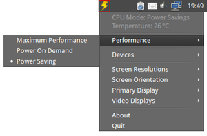

Jupiter
Archivierte Anleitung
Dieser Artikel wurde archiviert, da er - oder Teile daraus - nur noch unter einer älteren Ubuntu-Version nutzbar ist. Diese Anleitung wird vom Wiki-Team weder auf Richtigkeit überprüft noch anderweitig gepflegt. Zusätzlich wurde der Artikel für weitere Änderungen gesperrt.
Anmerkung: Die Entwicklung wurde eingestellt und die nur über ein PPA erhältlichen Fremdpakete sind nicht mehr verfügbar.
Zum Verständnis dieses Artikels sind folgende Seiten hilfreich:
Jupiter  ist ein Programm für mobile Rechner, mit dem man das Verhalten des Prozessors steuern sowie bestimmte Komponenten abschalten (und wieder anschalten) und so den Stromverbrauch verringern kann. Daneben ist über das Anwendungsmenü das Ändern der Bildschirmauflösung und -ausrichtung möglich – nicht lebenswichtig, aber beispielsweise beim Anschluss eines Beamers praktisch.
ist ein Programm für mobile Rechner, mit dem man das Verhalten des Prozessors steuern sowie bestimmte Komponenten abschalten (und wieder anschalten) und so den Stromverbrauch verringern kann. Daneben ist über das Anwendungsmenü das Ändern der Bildschirmauflösung und -ausrichtung möglich – nicht lebenswichtig, aber beispielsweise beim Anschluss eines Beamers praktisch.
Man sollte keine Stromsparwunder von Jupiter erwarten. Es bietet einen einsteigerfreundlichen grafischen Zugang zu Einstellungen, die man auch über die Kommandozeile (z.B. mit dem Befehl rfkill) umsetzen kann. Jupiter hat aber den Vorteil, dass einmal gemachte Einstellungen einen Neustart des Rechners überdauern. Die Programmsprache ist Englisch.
Da das Programm inzwischen stabil arbeitet und der Asus Eee PC, der die Programmentwicklung ausgelöst hat, nur noch gebraucht zu erwerben ist, hat der Autor Andrew Wyatt die Weiterentwicklung im Dezember 2012 beendet .

Installation¶
Jupiter ist nicht in den offiziellen Paketquellen enthalten. Zur Installation muss man daher auf ein "Personal Package Archiv" (PPA) [1] ausweichen.
PPA¶
Adresszeile zum Hinzufügen des PPAs:
ppa:webupd8team/jupiter
Hinweis!
Zusätzliche Fremdquellen können das System gefährden.
Ein PPA unterstützt nicht zwangsläufig alle Ubuntu-Versionen. Weitere Informationen sind der  PPA-Beschreibung des Eigentümers/Teams webupd8team zu entnehmen.
PPA-Beschreibung des Eigentümers/Teams webupd8team zu entnehmen.
Damit Pakete aus dem PPA genutzt werden können, müssen die Paketquellen neu eingelesen werden.
Nach dem Aktualisieren der Paketquellen kann das folgende Paket installiert [2] werden:
jupiter (ppa)
 mit apturl
mit apturl
Paketliste zum Kopieren:
sudo apt-get install jupiter
sudo aptitude install jupiter
Hinweis:
Anschließend muss ein Neustart durchgeführt werden!

Verwendung¶
Nach der grafischen Anmeldung erscheint Jupiter als Symbol im Benachrichtigungsfeld und wird auch darüber gesteuert bzw. konfiguriert. Unter Unity führt das wie üblich zu einem Problem, das sich aber durch einen kleinen Eingriff lösen lässt.
Da das Programm mit Root-Rechten [4] arbeiten muss, bleibt ein Aufruf über den Menü-Eintrag "System -> Jupiter" wirkungslos. Dies ist aber auch nicht notwendig, da es automatisch beim Rechnerstart bzw. nach der grafischen Anmeldung aktiv wird.
Einstellungen¶
Neben den in der Einleitung erwähnten Bildschirmeinstellungen sind im Menü nur zwei Punkte relevant, um Energie zu sparen:
"Performance" - Prozessortaktung
"Devices" - integrierte Komponenten

Performance¶
Technisch ausgedrückt wird die Taktfrequenz und Taktfrequenzumschaltung des Prozessors über den Governor beeinflusst. Drei Möglichkeiten stehen zur Auswahl:
"Maximum Performance"
"On Demand" (unter Ubuntu Standard)
"Power Saving"
Der ausgewählte Modus spiegelt sich im (andersfarbigen) Panelsymbol wieder. Inwieweit die Laufzeit mit dem Modus "Power Saving" tatsächlich verlängert wird, hängt vom Einzelfall und den Umständen ab. Hintergrundinformationen sind dem Artikel Prozessortaktung zu entnehmen.
Experten-Info:
Der Begriff "On Demand" kann im Zusammenhang mit der Prozessorsteuerung leicht missverstanden werden. Es gibt unter Ubuntu den Governor ondemand und einen Dienst namens ondemand. Letzterer sorgt dafür, dass der Governor ondemand automatisch nach dem Rechnerstart aktiviert wird.

Devices¶
Mit Devices (Geräte) sind hier Komponenten wie eine WLAN-Karte, ein BlueTooth-Adapter, eine Webcam und das Touchpad gemeint. Jede dieser Komponenten kann einzeln ab- oder wieder angeschaltet werden (aktive Geräte sind mit einem Haken gekennzeichnet). Im Gegensatz zum umstrittenen Nutzen einer Governor-Änderung verbrauchen deaktivierte Komponenten definitiv keinen Strom.
Problembehebung¶
Deinstallation¶
Wie bei der Installation sollte man auch nach der Deinstallation von Jupiter einen Neustart durchführen, damit es aus dem systemweiten Autostart entfernt wird. Diese Einträge befinden sich im Ordner /etc/xdg/autostart/.
Touchpad¶
Man sollte tunlichst vermeiden, dass Touchpad abzuschalten, wenn keine Maus angeschlossen ist. Denn sonst braucht man eine externe Maus, um es wieder zu aktivieren.
Links¶
Linux: 25% Mehr Strom Sparen Mit Jupiter
 - Blogbeitrag 12/2010
- Blogbeitrag 12/2010Stromsparen mit Ubuntu leicht gemacht
- Blogbeitrag 08/2010Strom sparen
 Übersichtsartikel
Übersichtsartikel
- Erstellt mit Inyoka
-
 2004 – 2017 ubuntuusers.de • Einige Rechte vorbehalten
2004 – 2017 ubuntuusers.de • Einige Rechte vorbehalten
Lizenz • Kontakt • Datenschutz • Impressum • Serverstatus -
Serverhousing gespendet von